专栏前面我们已经学习过文件 I/O 和存储优化，相信你已经掌握了文件 I/O 和存储的性能分析以及优化思路。今天我们就再接再厉，继续学习系统中另外一种常见的 I/O——网络 I/O。
我在写今天的文章时，回想了一下大学期间学的那本几百页厚的《计算机网络》，当时学得也是云里雾里，网络的确涉及了方方面面太多的知识。那我们作为移动开发者来说，都需要掌握哪些必备的网络知识呢？文件 I/O 跟网络 I/O 又有哪些差异呢？
今天我们不谈“经典巨著”，一起来解决移动开发工程师面对的网络问题。
网络基础知识
现在已经很难找到一款完全不需要网络的应用，即使是单机应用，也会存在数据上报、广告等各种各样的网络请求。既然网络已经无处不在，我们必须要掌握哪些基础知识呢？
1. 无线网络
在过去十年，移动互联网的高速增长离不开无线网络的普及。无线网络多种多样，而且各有各的特点，并且适合使用的场景也不同。
下图是 iPhone Xs 支持的无线网络类型，你可以看到 WiFi、蜂窝网络、蓝牙、NFC 这些都是我们日常经常使用的无线网络类型。
“千兆级 LTE”指的是蜂窝网络在理论上速度可以达到光纤级别的 1Gbps（125MB/s）。虽然基于 4G 标准，但通过MIMO（多输入多输出）、使用载波聚合的LAA等技术，现在已经发展到千兆级 LTE。2020 年我们也即将迎来 5G 的商用，它的理论传输速率可以达到 20Gbps。目前 5G 的标准还没有完全 release，关于 5G 的原理我推荐你看看这篇文章。
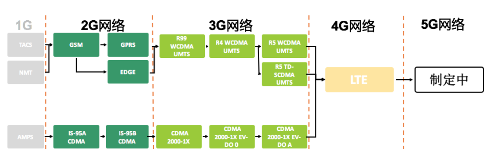
“802.11ac 无线网络”指的是我们经常使用的 WiFi。WiFi 由 IEEE 定义和进行标准化规范，跟任何流行的技术一样，IEEE 也一直在积极地发布新的协议。目前最常用的是802.11ac标准，它的理想速率可以达到 866.7Mbps。
从硬件维度上来看，所有的无线网络都通过基带芯片支持，目前高通在基带芯片领域占据了比较大的优势。之前由于苹果和高通的专利诉讼，iPhone Xs 选用了英特尔的基带芯片，但同时也出现大量的用户投诉网络连接异常。
市面上有那么多的无线网络标准和制式，还有双卡双待等各种特色功能，因此基带芯片对技术的要求非常高。随着未来 5G 的商用与普及，国内也会迎来新的一波换机潮。这对各大芯片厂商来说是机遇也是挑战，目前高通、MTK、华为都已经发布了 5G 基带芯片。如果你对当前的 5G 格局感兴趣，可以阅读《全世界 5G 格局》。
2. Link Turbo
像 5G 这种新的标准，可以极大地提升网络速度，但缺点是它需要新的基站设备和手机设备支持，这个过程起码需要几年的时间。
手机厂商为了提升用户的网络体验，也会做各种各样的定制优化，华为最近在荣耀 V20 推出的Link Turbo 网络聚合加速技术就是其中比较硬核的一种“黑科技”。
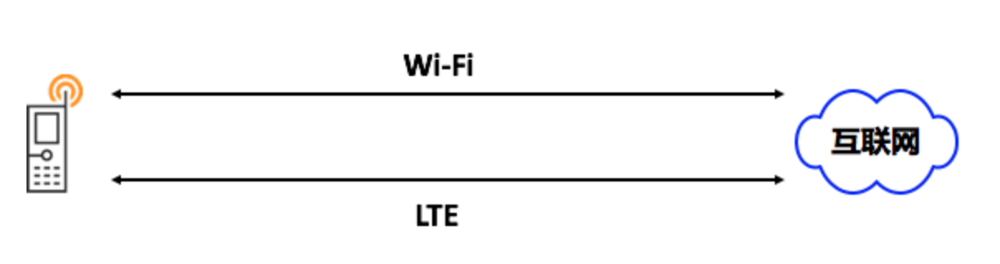
从硬件角度来说，WiFi 和蜂窝网络属于基带芯片的不同模块，我们可以简单的把它们理解为类似双网卡的情形。所谓的 Link Turbo 就是在使用 WiFi 的同时使用移动网络加速。
可能有人会疑惑，我都已经连接 WiFi 了，为什么还要使用收费的移动网络呢？有这个疑问的人肯定没有试过使用公司网络打“王者”团战卡成狗的情形，其实 WiFi 可能会因为下面的一些原因导致很不稳定。
事实上，双通道的技术也并不是华为首发。类似 iPhone 的无线网络助理、小米和一加的自适应 WLAN，它们都能在侦测到 WiFi 网络不稳定时，自动切换到移动网络。iPhone 在连接 WiFi 的时候，移动网络也是依然可以连接的。
而 Link Turbo 硬核的地方在于可以同时使用两条通道传输数据，而且支持 TCP 与 UDP。其中 TCP 支持使用的是开源的MultiPath TCP（iOS 7 也有引入），而 UDP 则是华为自研的 MultiPath UDP。
当然这个功能目前比较鸡肋，主要是由于一是覆盖的用户比较少，当前只有 V20 一台机器支持，而且还需要用户手动开启；二是改造成本，双通道需要我们的后台服务器也做一些改造才能支持。
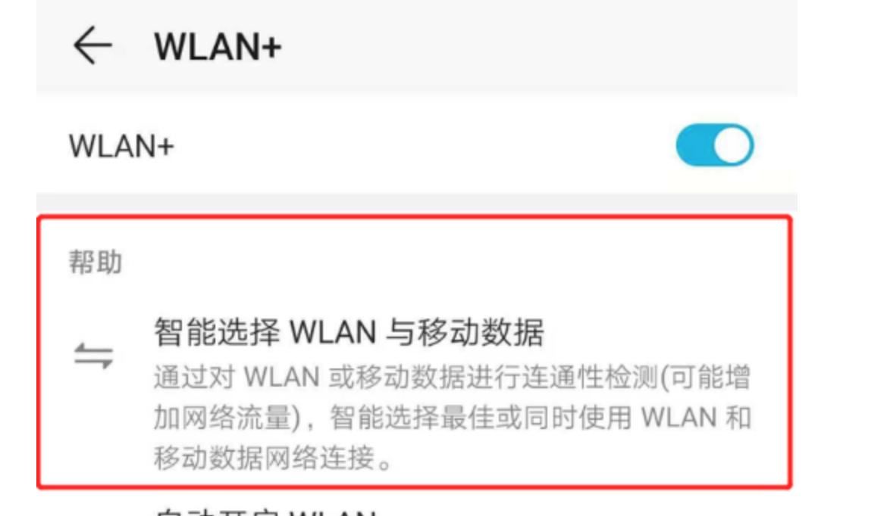
但是这项技术还是有一定的价值，一方面流量越来越便宜，很多用户不再那么 care 流量资费的问题。另一方面华为可以直接跟阿里云、华为云、腾讯云以及 CDN 服务商合作，屏蔽应用后台服务器的改造成本。目前爱奇艺、斗鱼和映客这些应用都在尝试接入。
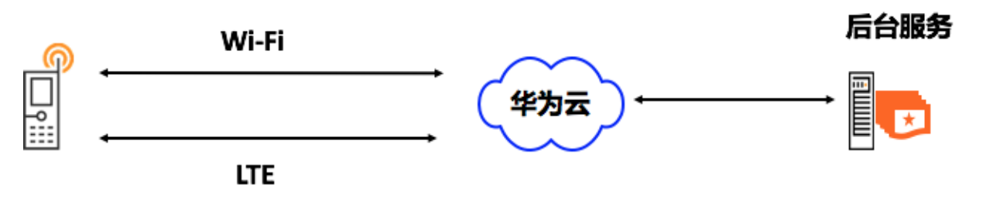
讲到这里你可能会问，为什么今天我会花这么多时间来讲 Link Turbo 技术？并不是因为我收了广告费，而是我发现很多时候在优化到一定程度之后，单靠应用本身很难再有大的突破。这个时候可能要考虑跟手机厂商、芯片厂商或者运营商合作，因此我们要随时关注行业的动态，并且清楚这些新技术背后的本质所在。
网络 I/O
在前面的专栏里，我讲了文件 I/O 的处理流程以及不同 I/O 方式的使用场景，今天我们再一起来看看网络 I/O 跟文件 I/O 有哪些差异。
1. I/O 模型
“一切皆文件”，Linux 内核会把所有外部设备都看作一个文件来操作。在网络 I/O 中系统对一个 Socket 的读写也会有相应的描述符，称为 socket fd（Socket 描述符）。
如下图以 Socket 读取数据 recvfrom 调用为例，它整个 I/O 流程分为两个阶段：
-
等待 Socket 数据准备好。
-
将数据从内核拷贝到应用进程中 。
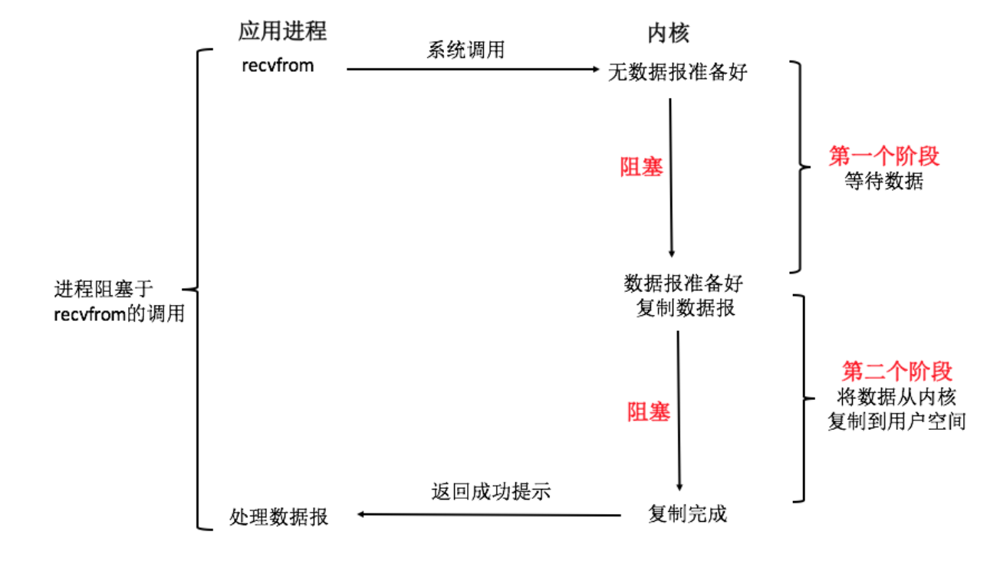
在《UNIX 网络编程》中将 UNIX 网络 I/O 模型分为以下五种。
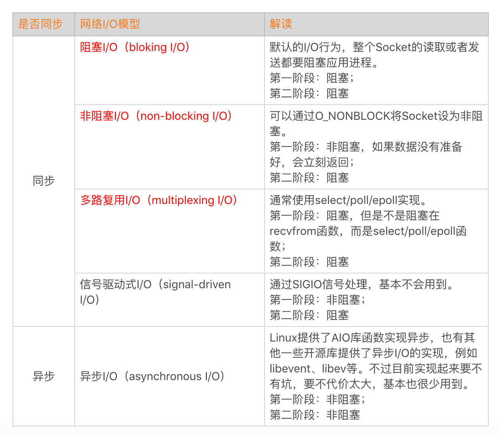
在开发过程中，比较常用的有阻塞 I/O、非阻塞 I/O 以及多路复用 I/O。关于 UNIX 网络 I/O 模型的更多资料，你可以参考《UNIX 网络编程》第六章、《聊聊 Linux 五种 I/O 模型》、《Unix 网络 I/O 模型及 Linux 的 I/O 多路复用模型》。
在查资料的时候我发现网上有很多文章的描述还是存在问题的，我们需要辩证地看。
-
多路复用 I/O 一定比阻塞 I/O 要好？跟文件 I/O 一样，最简单的 I/O 并发方式就是多线程 + 阻塞 I/O。如果我们同一时间活动的网络连接非常多，使用多路复用 I/O 性能的确更好。但是对于客户端来说，这个假设不一定成立。对于多路复用 I/O 来说，整个流程会增加大量的 select/epoll 这样的系统调用，不一定比阻塞 I/O 要快。
-
epoll 一定比 select/poll 要好？如果同一时间的连接数非常少的情况，select 的性能不会比 epoll，很多时候会比 epoll 更好。
-
epoll 使用了 mmap 减少内核到用户空间的拷贝？网上很多的文章都说 epoll 使用了 mmap 的技术，但是我查看了 Linux 与 Android 的epoll 实现，并没有找到相关的实现。而且我个人认为也不太可能会这样实现，因为直接共享内存可能会引发比较大的安全漏洞。
2. 数据处理
在下一期我还会跟你一起分析当前一些热门网络库的 I/O 模型，现在我们再往底层走走，看看底层收发包的流程是怎么样的。
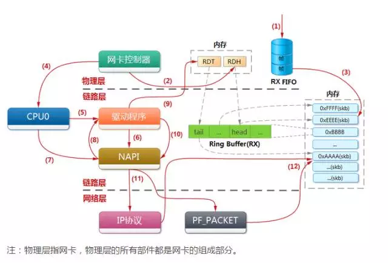
跟文件 I/O 一样，网络 I/O 也使用了中断。不过网络 I/O 的中断会更加复杂一些，它同时使用了软中断和硬中断。通过硬中断通知 CPU 有数据来了，但这个处理会非常轻量。耗时的操作移到软中断处理函数里面来慢慢处理。其中查看系统软中断可以通过 /proc/softirqs 文件，查看硬中断可以通过 /proc/interrupts 文件。
关于网卡收发包的流程网上的资料不多，感兴趣的同学可以参考下面几篇文章：
考虑到这块比较复杂，我在专栏里提供给你参考资料，有兴趣的同学可以进一步深入研究。
网络性能评估
我们常说的网络性能优化，通常都优化哪些方面呢？有的同学可能会关注网络的带宽和服务器成本，特别是直播、视频类的企业，这部分的成本非常高昂。虽然有的时候会做一些取舍，但是用户的访问速度与体验是所有应用的一致追求。
1. 延迟与带宽
如果说速度是关键，那对网络传输速度有决定性影响的主要有以下两个方面：
-
延迟：数据从信息源发送到目的地所需的时间。
-
带宽：逻辑或物理通信路径最大的吞吐量。
回想一下文件 I/O 性能评估似乎已经很复杂了，但是它至少整个流程都在手机系统内部。对于网络来说，整个流程涉及的链路就更加复杂了。一个数据包从手机出发要经过无线网络、核心网络以及外部网络（互联网），才能到达我们的服务器。
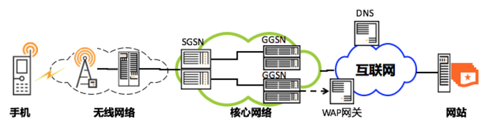
那延迟和带宽又跟什么因素有关呢？这里面涉及的因素也非常多，例如信号的强度、附近有没有基站、距离有多远等；还跟使用的网络制式，正在使用 3G、4G 还是 5G 网络有关，并且网络的拥塞情况也会产生影响，比如是不是在几万人聚集的大型活动场所等。
下面是不同网络制式的带宽和延迟的一般参考值，你可以在脑海里建立一个大致的印象。
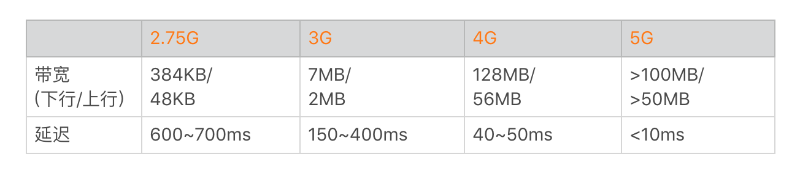
当出现上面说到的那些因素时，网络访问的带宽要大打折扣，延迟会加倍放大。而高延迟、低带宽的网络场景也就是我们常说的“弱网络”，它主要特点有：
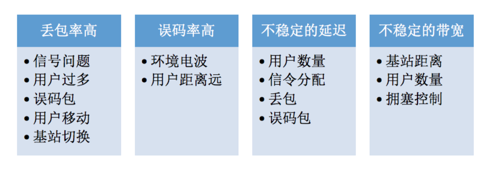
关于“弱网络”如何进行优化，我在微信时针对弱网络优化投入了大量的精力，这也是我在下一期所要讲的重点。不过我想说的是，即使未来 5G 普及了，但是各种各样的影响因素依然存在，弱网络优化这个课题是有长期存在的价值。
另外一个方面，不同的应用对延迟和带宽的侧重点可能不太一样。对于直播类应用或者“王者荣耀”来说，延迟会更重要一些；对腾讯视频、爱奇艺这种点播的应用来说，带宽会更加重要一些。网络优化需要结合自己应用的实际情况来综合考虑。
2. 性能测量
正如文件 I/O 测量一样，有哪些方法可以帮助我们评估网络的性能呢？
对于网络来说，我们关心的是下面这些指标：
-
吞吐量：网络接口接收和传输的每秒字节数。
-
延迟：系统调用发送 / 接收延时、连接延迟、首包延迟、网络往返时间等。
-
连接数：每秒的连接数。
-
错误：丢包计数、超时等。
Linux 提供了大量的网络性能分析工具，下面这些工具是 Android 支持并且比较实用的，这些工具完整的功能请参考文档或者网上其他资料，这里就不再赘述了。
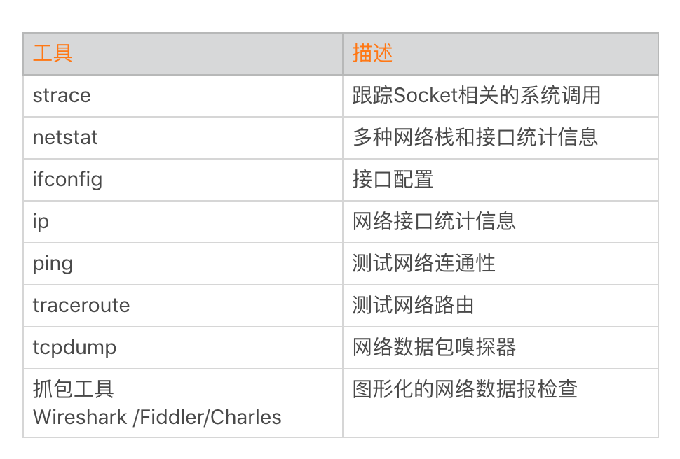
如果你对 Linux 底层更加熟悉，可以直接查看 /proc/net，它里面包含了许多网络统计信息的文件。例如 Android 的TrafficState接口就是利用 /proc/net/xt_qtaguid/stats 和 /proc/net/xt_qtaguid/iface_stat_fmt 文件来统计应用的流量信息。
总结
从网络通信发展的历程来说，从 2G 到 4G 经历了十几年的时间，这背后离不开几百万个基站、几亿个路由器以及各种各样的专利支持。虽然网络标准不停地演进，不过受限于基建，它的速度看起来很快，但是又很慢。
那对我们自己或者应用会有哪些思考呢？HTTP 2.0、HTTP 3.0（QUIC）等网络技术一直在向前演进，我们需要坚持不懈地学习，思考它们对我们可以产生哪些影响，这是对网络“快”的思考。TCP 和 UDP 协议、弱网络等很多东西在这二十多年来依然没有太大的改变，网络的基础知识对我们来说还是非常重要的，这是对网络“慢”的思考。
课后作业
在讲 Link Turbo 的时候我说过，iPhone 的无线网络助理、小米和一加的自适应 WLAN 它们在检测 WiFi 不稳定时会自动切换到移动网络。那请你思考一下，它们是如何实现侦测，如何区分是应用后台服务器出问题还是 WiFi 本身有问题呢？今天的作业是在留言区写写你对这个问题的看法，欢迎留言跟我和其他同学一起讨论。
今天我推荐一本必读的网络书籍：《Web 性能权威指南》，它里面第一句话就讲得非常好，我把它分享给你：“合格的开发者知道怎么做，而优秀的开发者知道为什么那么做”。
对于想进一步深入研究的同学，你可以研读这些书籍：
-
《UNIX 网络编程》
-
《TCP/IP 详解 卷 1：协议》
COMMUNITY NOTES
读者评论
对课后作用的思考： 他们是如何实现网络不稳定的探测的？ 所谓不稳定，我的理解其实就是弱网络的判断，那么什么是弱网络？一般情况下，低于2G 网速，上行20kbps /下行 50kbps 就可以认为是弱网；当然，这个范围是见仁见智的，也可以更大一些；此时分为wifi连接上，但可用与不可用两种状态；不可用时的一种典型场景就是： 连上需要登录认证后使用的公共wfi ; 所以问题就变成2个方面的判定: (1) 判定网络是否可用： 这个最简单有效的办法就是向指定地址发起HTTP请求，服务端返回204响应码即可；这个也是Google 在 6.0 以上流量监控模块的实现方案；其他同学有提到ping 方案，呵呵，ping 一般是内部ip开放探测网络是否畅通的方案，但企业ip 一般是对外禁止ping的，因为会有安全攻击；所以ping 其实是行不通的；(2) 判断网络是否稳定： 稳定的临界判断可以根据网络速度来判断，厂商一般会有流量统计模块，自然可以统计当下的wifi 传输速度，只要低于某个速度，甚至在某个时间内经常断开又连上，就可以判断为不稳定网络了。以上拙见，欢迎绍文老师以及其他同学指正O(∩_∩)O~
张老师我遇到一个问题就是Mars做长连接怎么能用jobservice兼容Android8.0以上版本，没有相应思路希望你能给我一些帮助谢谢
Wi-Fi信号强度高低，响应的速度快慢 判定切换？自主的ping 一个ip 来判断Wi-Fi 的速度
一开始比较朴素的想法：通过请求已知的，稳定的服务器，去请求应用的服务器。在这两个环节中，判定是网络问题，还是应用服务的问题。googl一下，发现WifiManager也可以获取连接速度，信号强度这些指标。
5G延迟的数据从哪里来的？似乎不严谨啊。10ms的延迟是指多远的传输距离？光速绕地球一圈尚且要大约140毫秒，如果传输距离是地球的周长，怎么可能只有10ms？而且因为5G的频率较高，在不良导体中能量损耗严重，不能传输过远的距离，需要经过许多个基站转发，基站处理也需要时间啊。总觉得这个10ms像是上市公司为了热炒5G概念在“短距离内的两个端点端对端传输的延迟时间”...
4G还分td-lte和fdd-lte😃
关于课后作业，如何侦测网络，是在哪一章回复的？后面几章好像没看到回复这个问题
如何实现侦测，如何区分是应用后台服务器出问题还是 WiFi本身有问题呢是不是可以尝试百度等比较稳定的服务，以此来判断是后台出了问题，还是wifi传输出现拥堵
检测到路由器的丢包率就可以判断啦
理论上后台挂掉的话，请求是5xx错误码。通过http的响应码就可以区分。
做App的流量使用统计有什么方法呢？
我说个最简单的思路，连上WIFI.ping 一个公有ip,如果通过就说明可以，如果不行就说明WIFI网络不可达，这期间还可以做 丢包获取看网络的丢包率。
怎么区分是wifi问题还是应用后台问题？
希望后面能出个怎么优化网络相关的内容，最近正打算优化网络，发现okhttp有时候会遇到网络良好但请求失败的情况
改完bug前来学习一波知识